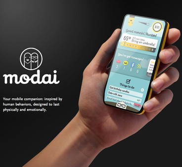
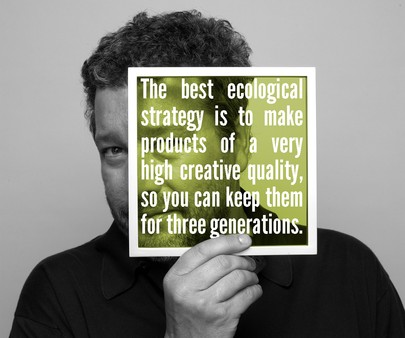
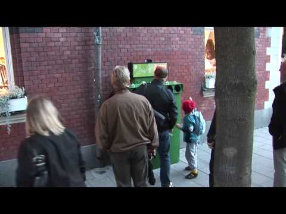
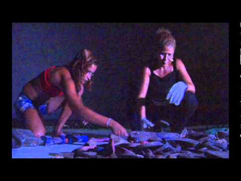
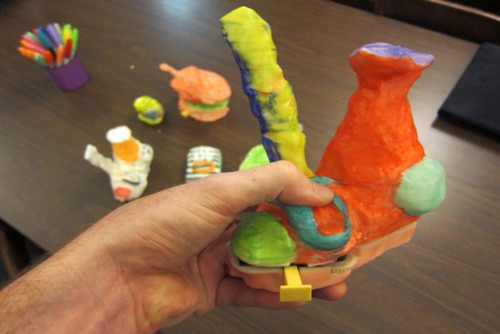
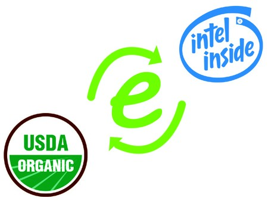
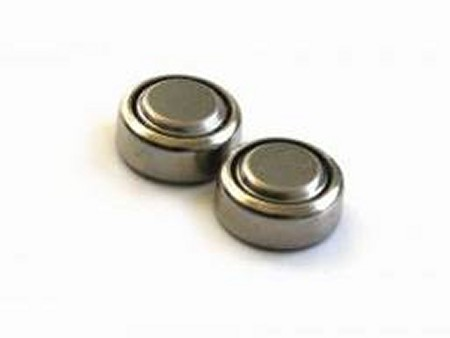
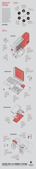
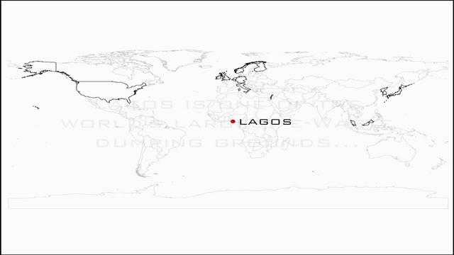

Mission #5
Surprise Us
What have we missed? Inspire us with insights, examples and stories which go beyond our other Missions.
View all related inspirations
Related inspirations

2 ways to slow down e-waste's exponential growth inspired by Project Modai phone
The Project Modai phone offers 2 inspirational insights on how to slow down e...
.

A Quote
The best ecological strategy is to make products of a very high creative qual...
.

Adding fun
To get in the tons of electronic waste just sitting in peoples houses or gett...
.

An Inspiring Artist Uses Garbage to Transform Lives
Brazilian artist Vik Muniz uses garbage to create art and transform the lives...
.

Artphones
Bobby Genalo, an NYU ITP program graduate, reimagines the cellphone with "e-w...
.

Building a Brand for “Made from E-Waste”
When we’re shopping, several logos might give us more confidence on the produ...
.

ChargeChange
My idea is to adopt one of the large circular watch-type batteries as a new c...
.
Create a high quality media campain & educational program for schools to develop sustainable habbits
To raise the public awarenss of the people through the local and social media...
.

Design For (Your) Product Lifetime Student Challenge
A student design competition being held by Core77, Autodesk and iFixit to cha...
.

e-Farming: A New e-Waste Landscape
With the concept of "e-Farming," children in Lagos Nigeria could learn simpl...
.